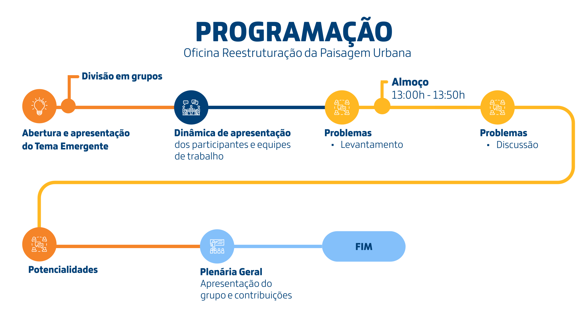
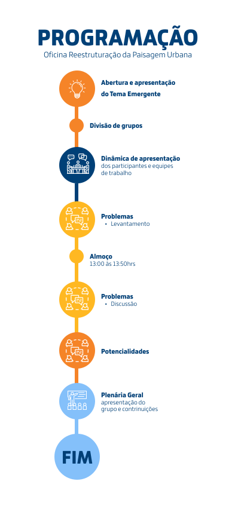

Foto: SECOM Maceió
Para compreender os processos de transformação das dinâmicas urbanas de Maceió, em especial de suas paisagens, esta temática leva em consideração as contradições e as complexidades das cidades contemporâneas, com suas dispersões e permanências, demolições e construções, que acontecem simultaneamente no território. No contexto da cidade de Maceió, os desafios decorrentes do esvaziamento de cinco bairros situados na área de risco de afundamento, ocasionado pelas atividades de mineração da Braskem, serão traduzidos aqui em reestruturações urbanas. Essas reestruturações consistem em um conjunto de transformações significativas das paisagens da cidade, incluindo a ruptura do tecido urbano, as remoções forçadas das comunidades locais, a perda do patrimônio cultural, o enfraquecimento da memória coletiva e, sobretudo, a forma como a cidade é percebida e vivenciada por seus habitantes. Diante disso, a revisão do Plano Diretor se apresenta como uma oportunidade para que essas reestruturações urbanas reconheçam e preservem a identidade e a memória dessas comunidades urbanas diretamente afetadas.

